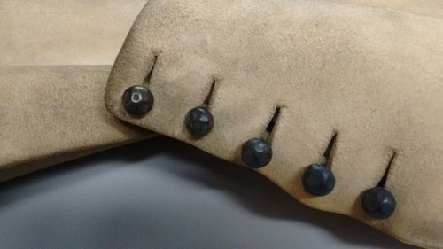

We were privileged to have a team visit to the Museum of London stores on Thursday 12 October 2017, ably guided by Curator Tim Long. Currently, we are trying to get to grips with how to integrate notions of animal skin within our discourse. How animal and human skin are conceived in this period in different ways is significant, for what underpinned contemporary thought that made it quite permissible (and indeed appropriate) to cover your body in the skin of one living being (animal) but not another (human)? One theme of the project is 'protecting' and Juliet has a current affinity to buff coats, so it seemed only natural to consider leather as protection. In addition to buff coats (see detail of buttons on the sleeve of one below) we saw a number of other items made of leather.

A buff leather hat with a high crown and wide brim from the Joicey Collection, while a beautiful survival, was made all the more intriguing when we were told that scientific analysis has revealed the presence of 5 bullets within it. This raises so many questions about who might have worn this and when, for the decorative features – an embroidered coat-of-arms with green silk and gilt-metal thread tassels, an applied leather socket in the shape of a shell designed to hold a feather, and the metal threads that provide overall ornamentation (including a gold fleur-de-lis) – are suggestive of someone not accustomed to being a target in military skirmishes.
Seventeenth-century gauntlet gloves made of kid or lamb skin were covered at the wrist band with embroidery of silk and metal threads, with floral and other motifs. A particularly striking pair of gloves decorated with what seemed to be butterflies retain their vivid colours, with blue, yellow, pink, green, and brown thread highlighting the various decorative features and set against the silver and silver-gilt lacework. These serve to remind us that while the gloves were made of a leather, designed to protect the hands in an altogether practical way, they were still conceived as highly fashionable items in the Renaissance.
The team discussing the objects in the stores
As a group, we were all taken by the heavy-set postillion boots. These were worn to protect a rider (the postillion) as he rode the near horse of a pair to guide the horses pulling a carriage. These were large and stiff, with the sides of the legs forming a shield-like protection and the foot was almost encased within a box-like form. These stood in stark contrast to the more delicate slap-soled shoes (so-called because of the sound they made as you walked). Also made of leather, they were not required to be as cumbersome as the riding boots. The pair that we saw date to the later half of the seventeenth century and are made of white kidskin with silk embroidery decoration. Quite fortuitously, some of the decoration is missing which allows for a better understanding of the form of the shoe.
We saw two further objects that incorporated animal skin in the broadest sense. The first was a sword dated to the 1630s. It has a straight single-edged blade, which is inscribed ‘ME FECIT HOUNSLOE’, telling us that this was made at the Hounslow Sword Factory (Hounslow was known for its concentration of swordsmiths). Of interest is its grip, made of fish skin and bound with wire. The use of this rough material was likely to ensure a secure grip when in use. We had to keep our distance from a man’s tricorne hat from the seventeenth century, as XRF analysis identified the presence of mercury in it. Mercury was used in the hat manufacturing process, which really does show how people were willing to put their lives on the line all for the sake of fashion! But this does also raise interesting questions about this substance penetrating the skin’s pores. For, just as sweat, tears, mucus, and the like, left the body, through these same avenues material could enter the skin. Were contemporaries attuned to these implications? The upturned brim of the hat is decorated with feathers all around. Traditionally, it has been thought that these are ostrich feathers but this is not confirmed. But regardless from which bird these feathers may have come, the point is that early modern citizens thought it neither strange nor inappropriate to use as personal ornamentation the external parts of another living entity.
This visit was very thought provoking but, more than this, it was fun to explore some of the questions that we have been asking ourselves through the material itself. It reminded us why when seeking clarity on sometimes seemingly theoretical or abstract notions, material matters.
We would like to thank Tim Long for giving up his time so generously to explore these wonderful objects with us.
NAD
Image: Detail of full-length, buff leather coat showing the metal buttons and buttonholes on the left sleeve, 1651-1660, Museum of London inv. no. A3114. Courtesy of the Museum of London